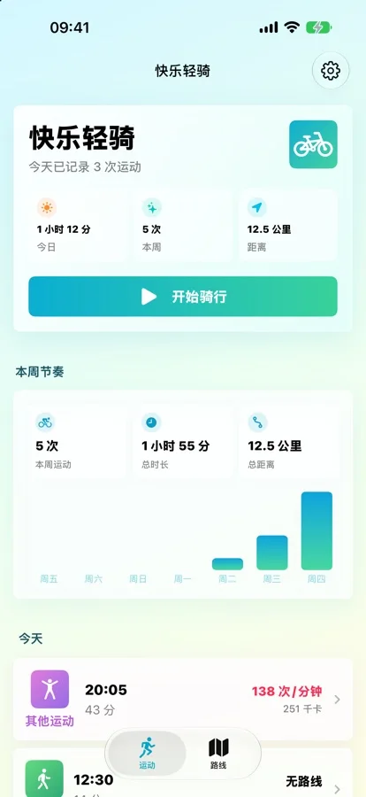
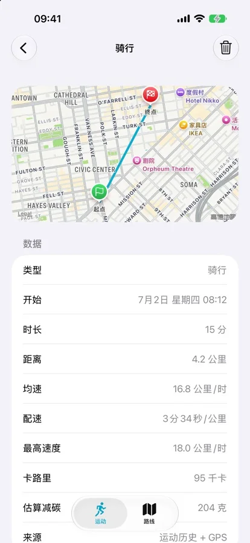

iPhone bike ride tracking guide
Track a bike ride on iPhone automatically in 4 steps.
Set up Motion & Fitness, background location, Apple Health, and a test ride. HappyRide records qualifying rides without tapping Start; Apple Watch is optional.


Quick answer
Use the iPhone for automatic rides or Apple Workout for manual control.
Apple's Workout app is the better choice when you want detailed Apple Watch cycling views, sensor metrics, goals, and a deliberate start. Apple documents start reminders, but its cycling instructions still tell you to select a cycling workout and tap Start.
HappyRide is for the commute or spontaneous ride you forget to start. It detects qualifying cycling from the iPhone in the background, then can save route, duration, calories, and optional Apple Watch heart rate to Apple Health. It is an activity recorder, not a bike theft tracker.
The iPhone provides core motion detection and background route recording. Apple Watch is optional.
Motion & Fitness and background location enable detection; Health access is separate and optional.
HappyRide version 1.2 requires iOS 17 or later, and its current in-app interface is Simplified Chinese.
Start behavior compared
Apple Workout reminder vs HappyRide automatic detection.
The important distinction is what happens before a workout begins, not whether an app can pause after you stop at a light.
Setup
How to track a bike ride on iPhone in 4 steps.
Automatic detection depends on the permissions that provide motion context and route data. Review them separately. You can use the free tracking workflow without subscribing to the optional Quiet and Scenic route planner.
Use an iPhone running iOS 17 or later. Expect the current in-app interface to be Simplified Chinese.
Review Motion & Fitness and background location access. Without them, automatic recognition or route recording cannot work as intended.
Allow Apple Health access if you want workouts saved there. Pair the optional Apple Watch companion for heart rate, duration, energy, and watch-face access.
Take a normal qualifying ride, then inspect the detected duration, route, calories, heart rate when available, and the resulting Health workout before relying on it for every trip.
Realistic limits
Automatic detection is convenient, not infallible.
A detector needs enough consistent motion to classify a ride. A trip that lasts only a few minutes, repeatedly stops, begins with disabled permissions, or runs while iOS is heavily restricting background work may not become a qualifying workout. Do not use an automatic tracker as the only record for a race, medical plan, reimbursement claim, or safety-critical trip.
Verify one familiar route first. Check start and end timing, route shape, distance, and Health sync.
For planned training, indoor rides, power zones, cadence, or exact start timing, Apple Workout is the stronger fit.
HappyRide's core detector uses the iPhone. It cannot record a ride if the phone is left behind.
Recorded workout routes do not locate an unattended or stolen bicycle. Use purpose-built hardware for that job.
Official sources
Check the current behavior before choosing.
Apple and app features change. These conclusions use the current public documentation and listing checked on August 16, 2026. Confirm the live pages, especially permissions, language, compatibility, and in-app purchase terms.
FAQ
iPhone bike ride tracking questions answered.
How can I track a bike ride on my iPhone automatically?
Install a bike ride tracker app, allow Motion and Fitness plus background location, connect Apple Health if you want workout records, then take a test ride. HappyRide can detect qualifying cycling and record the GPS route without requiring you to tap Start every time.
Does Apple Watch automatically start a cycling workout?
Apple documents workout reminders that can alert you to start and gives credit for exercise already completed. Its cycling guide still instructs users to choose Outdoor Cycle or Indoor Cycle and tap Start. Auto-Pause can pause and resume an outdoor cycling workout after it has started.
Do I need an Apple Watch for automatic bike ride tracking?
No. HappyRide's core detection uses iPhone motion signals and background GPS. Apple Watch is optional and can add heart rate, a companion app, and a watch-face complication.
Why might an automatic ride tracker miss a short ride?
Automatic detection needs enough consistent motion to classify an activity. Very short trips, frequent stops, unavailable background location, disabled Motion and Fitness access, or aggressive power restrictions can reduce the chance of a qualifying detection.
Is an automatic ride tracker the same as a GPS bike theft tracker?
No. HappyRide records your activity and route while you ride. It is not an AirTag replacement, anti-theft device, or service for locating an unattended bicycle.
Is HappyRide free?
The App Store listing says automatic activity tracking, Apple Health sync, Apple Watch support, ride history, and stats are free. Quiet and Scenic route planning and turn-by-turn navigation are optional subscription features.